Four steps. Run them on every task that's eating your week.

Diagram · Dan MartellTrack your daily tasks to identify what drains your energy and what adds value.
Delegate the low-value, energy-draining tasks to others — AI, software, or a new hire.
Use the freed-up time for high-value activities — strategy, marketing, or rest.